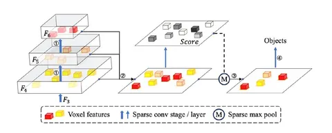

Классические dense-подходы, применяемые поверх воксельных featuremap’ов требуют большого количества вычислений и пост-процессинга (например, NMS). Сегодня разберём статью о попытках оптимизировать это.
Авторы предлагают решать задачу 3D-детекции на лидарных точках в fully-sparse режиме. Для построения такого детектора используют классический spconv-based лидарный бэкбон. Но с улучшениями:
В статье много ablation’ов по всем предложенным изменениям. По результатам замеров на nuScenes, подход позволяет получить сравнимое с лидерами качество 3D-детекции при значительно лучшем latency.
Разбор подготовил
404 driver not found
